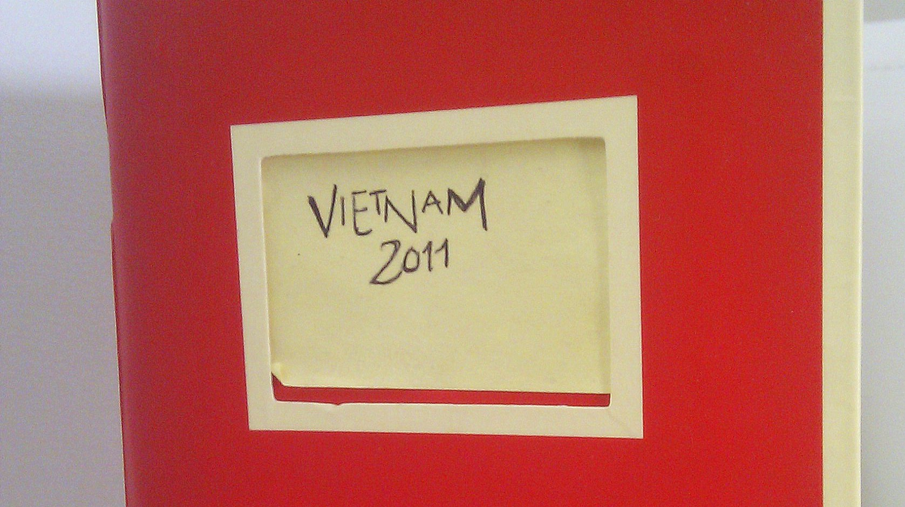

30 Dec Les meilleures adresses
De retour à la réalité du quotidien (un mois plus tard!), on a décidé de vous faire part de nos adresses incontournables. Si jamais vous allez au Vietnam, prenez les en note, on vous les recommande vivement! Il y a dans cette liste très subjective, des hébergements, des restaurants, des endroits propices à faire une petite pause dans une journée très occupée et même des recommandations d’activités/excursions. Bref, voici notre melting pot:
Hanoi
- Hanoi Triumphal Hotel (34 Hang Ga Street, www.hanoitriumphalhotel.com): c’est un hôtel tout simple, mais le personnel est particulièrement sympathique. Ça a été notre premier hôtel du voyage et c’était juste parfait pour s’acclimater à ce que nous allions vivre au cours du mois de novembre. Ça ressemble à un deux étoiles, propre et bien situé (tout se fait à pied à partir de là).
- Legend Beer (01-03-05 Dinh Tien Hoang, www.legendbeer.vn): l’endroit où vous paierez le plus cher pour votre bière, mais c’est la seule option si vous désirez boire autre chose qu’une bière locale. Et même si vous êtes vraiment emballés par la découverte des bières vietnamiennes, ça vaut quand même la peine d’y aller. Non seulement pour boire autre chose, mais pour avoir une super vue du rond-point achalandé. Allez-y de soir, c’est encore plus impressionnant!
- La chaîne de restaurants Pho 24: n’y allez pas. En fait, si vous allez au Vietnam sans avoir jamais goûté de la soupe tonkinoise (vraiment…est-ce que ça se peut?), peut-être saurez-vous apprécier les soupes sans goût qu’ils offrent. Et vous n’y trouverez que des touristes. En général, ne voir que des blancs dans un restaurant, ça n’est pas un gage de fraîcheur et d’authenticité.
- Cha Ca La Vong (14 Pho Cha Ca) – Bon petit restaurant familial où le cha ca était fantastique. Mais ne prenez pas les gouttes, c’est tellement trop cher!!! Ce restaurant est plutôt touristique, mais vraiment très bon et réputé, c’est pour ça que nous y sommes allés. Mais si vous êtes plus aventureux, allez dans un restaurant où il est écrit cha ca sur l’enseigne à l’entrée et regardez s’il y a beaucoup de locaux qui y mangent. Si oui,comme on dit, it’s the place to be!
Sapa
- Si vous voulez vous procurer un manteau d’hiver North Face, c’est ici qu’il faut acheter, vous ne trouverez pas moins cher ailleurs. Vous paierez seulement une fraction du prix de ce qu’on retrouve au Québec. Et ne pensez pas que vous en trouverez ailleurs dans le pays, on a réalisé trop tard qu’on était passé à côté d’une aubaine.
- Nous l’avons déjà mentionné, mais ça vaut VRAIMENT la peine d’insister: si vous prenez l’excursion des visites de villages h’mongs, ne prenez que l’hébergement chez l’habitant, c’est vraiment typique, plus chaleureux et plus dépaysant. Y passer deux ou trois nuits vous fera apprécier grandement la simplicité des lieux.
Halong Bay
- On vous conseille de prendre 2 nuits sur le bateau, si vous trouvez une excursion qui vous l’offre. Comme ça, vous pourrez profiter du bateau et des activités à faire (kayak, baignade,etc).
- Cat Ba Island: pas nécessairement l’endroit le plus intéressant; on ne recommande pas. Et Monkey Island (en excursion supplémentaire la plupart du temps), c’est une plage de galets où il y a deux-trois singes qui sont un peu dangeureux. Tout ce qu’on a apprécié de notre bref séjour à Cat Ba a été la visite du parc national.
Huê
- La bijouterie dont on vous a déjà parlé avec la merveilleuse Hang, se situe à proximité de nombreux petits hôtels. En marchant sur Lê Loi (rue où vous pourrez vous procurer quelques souvenirs), arrêtez-vous au 60, là-même où vous verrez l’enseigne de Tâm Dan. Sachez que c’est fermé entre 11h30 et 13h (Hang est grand-maman et va faire dîner ses petits-enfants hihihi!).
- Deux excellents restaurants dans Hue (on en a déjà parlé, mais voici les informations): Hang Me (45 Vo Thi Sau…c’est dans une petite rue donc n’hésitez pas à demander des indications pour vous y rendre). De nombreuses spécialités locales (banh) à un prix très raisonnable. Le service est rapide même si le restaurant est quoitidiennement rempli par une clientèle locale fidèle. Nous avons également mangé un des meilleurs bun bà hue au Dac San Bun Bà Huê (19, Ly Thuong Khiet). C’est un peu à l’extérieur du secteur touristique. Vous pouvez y aller le matin ou le midi. Tout en simplicité et excellent!
Hoi An
- Sous les conseils d’une amie ayant visité le Vietnam avant nous, nous sommes allés au Bale Well (45/51 Tran Hung Dao…tout au fond d’une ruelle) dès notre arrivée dans la ville et nous nous sommes gavés (littéralement) de banh xèo et de nems. En discutant avec la proprio, nous avons rapidement su ce qu’il y avait à faire et à voir à Hoi An. Et c’est elle qui nous a dirigé vers le Yaly (voir ci-bas). Sans blague, c’est de loin le meilleur restaurant de Hoi An. Nous y serions retournés à tous les jours!
- D’autres bons restaurants se trouvent ça et là dans Hoi An, mais les meilleurs sont plus souvents les restaurants dont aucun guide touristique ne fait mention. Gardez l’oeil ouvert!
- Nous nous sommes payés le luxe des vêtements sur mesure au Yaly Couture (il y a trois adresses dans la ville, mais le meilleur service de Linh et Evy se trouve au 47, Nguyen Thai Hoc, www.yalycouture.com). N’hésitez pas à apporter des exemples de vêtements (coupure de revue, dessin,etc) si vous avez des besoins très précis.
- Un must à Hoi An: se déplacer à vélo dans la ville et dans les alentours. Mais n’allez pas jusqu’à la plage, elle n’en vaut pas la peine. Et en plus, on vous obligera à garer votre vélo à grands frais pour pouvoir vous rendre sur cette petite bande de sable.
Nha Trang
- S’il est une ville où vous pourrez vous permettre de louer un scooter, c’est bien ici. Les rues sont plus larges et la circulation beaucoup moins dense. Vous pouvez faire la location avec la réception de votre hôtel ou directement avec un particulier qui vous l’offre. Le tarif quotidien est de moins de 10$. Et pour faire le plein, ça ne vous coûtera pas plus de 2 à 3$.
- Notre hôtel était vraiment très propre et très moderne, en retrait de la grande rue: le Green Peace Hotel (102, Nguyen Thien Thuat).
- Nous avons passé une bonne demie-journée dans les bains de boue et sources thermales au Thap Ba Hot Springs (tout au bout de la rue Ngoc Son; vous n’avez qu’à suivre les indications, c’est à proximité des Tours Chams Po Nagar). Un petit conseil: n’apportez pas de costume de bain blanc. Et si vous voulez être sûr de ne pas détruire votre maillot, empruntez sans frais un costume là-bas. Peu flatteur, mais peu importe, vous passerez votre temps dans la boue ou dans l’eau!
Mui Ne
- Nous avons passé un excellent séjour au Nhu Huong hotel, mieux connu sous le nom de Backpacker Resort/Vietnam-Austria House (88, Nguyen Dinh Chieu, www.muinebackpackers.com). C’est à distance de taxi (45 000 dongs) de l’arrêt d’autobus. John et Thuy, nos hôtes, ont été les meilleurs guides pour bien profiter des charmes de Mui Ne. Le bungalow en bord de mer était charmant et loin de l’univers des backpackers.
- Le restaurant où nous sommes allé trois soirs de suite est le Bo Dê (il n’y a pas vraiment d’adresse, mais c’est à environ 10-15 minutes de marche des hôtels). Vous verrez de nombreux petits restaurants de fruits de mer, mais ne vous trompez pas: le meilleur se trouve un peu plus loin et c’est au Bo Dê qu’il faut aller!
Saigon
- Notre premier hôtel a été le Duc Vuong Hotel (195, Bui Vien, District 1, www.ducvuonghotel.com) et avec le service et le personnel plus que courtois, nous avons regretté d’avoir changé d’hôtel en milieu de semaine. Le petit-déjeuner est offert gratuitement à tous les jours (les soupes sont très bonnes).
- Nous avons opté pour une excursion au Delta de Mékong en aller-retour (dans la même journée): erreur. Si nous pouvions le refaire, nous aurions pris l’excursion de deux jours, avec une nuitée dans le Delta.
- Cu Chi: évidemment, si vous y allez par vous-mêmes, arrêtez déjeuner au Bun Gio Heo Duc (29, Ninh Tôn), restaurant de l’oncle Tran! Dites que c’est Khoa et Julie Anne qui vous y envoient 🙂 C’est à peine à 10 minutes à pied du terminus d’autobus de Cu Chi. Ensuite, pour aller visiter les tunnels en avant-midi, vous pourrez vous y rendre facilement en taxi (40$ aller-retour). Bien plus authentique comme expérience que de prendre une excursion organisée d’une demie-journée.
Recommandations générales
- Transport: Si vous désirez économiser beaucoup d’argent et que vous voulez avoir une grande flexibilité dans vos dates,l’open tour bus est la meilleure solution. Pour environ 50$ par personne, on a fait 6 destinations du Nord au Sud, parfois en sleeping bus (économie de nuit d’hôtel!). Nous avons opté pour Sinh Tourist. Peu importe avec qui vous faites affaires, ne prenez pas Camel, ils ont les pires autobus!
- Excursions: Sinh Café (qui devient Sinh Tourist) a été notre tour opérateur pour nos différentes excursions (soit Sapa, la Baie d’Along, la visite de My Son). C’est aussi à travers eux que nous avons pris notre open tour bus. Excellent service!
- Argent: La meilleure façon de voyager, c’est de mettre de l’argent sur votre carte de crédit et d’utiliser celle-ci pour retirer dans les guichets automatiques (y en a partout!)
- Gastronomie: Tout le monde vous le dira, la meilleure bouffe est celle qu’on retrouve dans la rue, dans les plus petits restos. Et c’est vrai. Mais laissez le temps à votre corps de s’adapter avant de manger ou boire n’importe où. Y a aucun problème avec la glace, celle-ci est habituellement faite avec de l’eau traitée. Et permettez-vous de manger des fruits (le durian pour les plus courageux!) et des légumes, vous trouverez de la fraîcheur dans les nombreux marchés que vous croiserez. Allez dans ces marchés tôt le matin, vous pouvez vous y rendre dès 6h00.
- Connexion Internet: vous vous en douterez, tous nos hébergements nous ont proposé une connexion wifi sans frais. En fait, presque partout au Vietnam, vous arriverez à vous brancher facilement, que ce soit à l’hôtel, dans un café ou même dans certains lieux publics. C’est facile de rester en contact, même à l’autre bout du monde!
Sur ce, nous vous souhaitons une excellente année 2012, remplie de…voyages! Nous en sommes déjà à planifier notre prochain périple bin bin loin. Nous vous tiendrons au courant de nos prochaine destinations.
Sorry, the comment form is closed at this time.